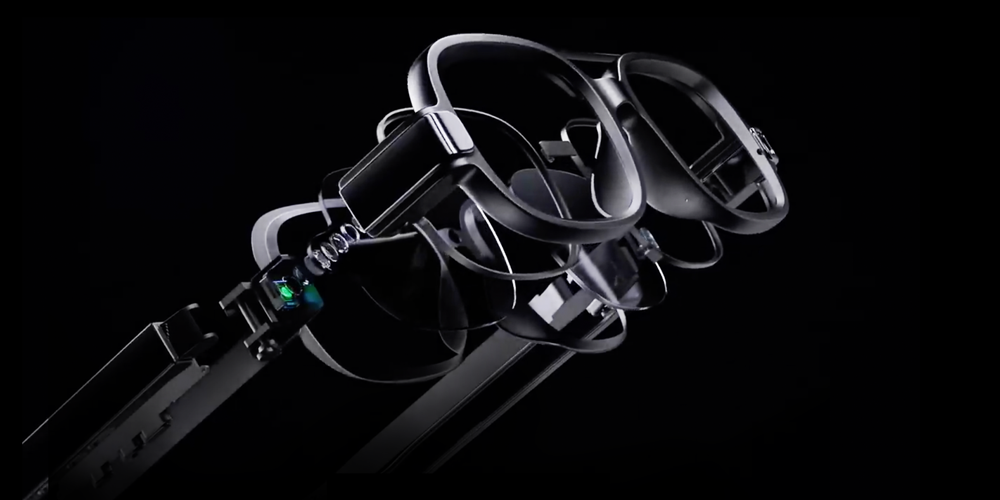
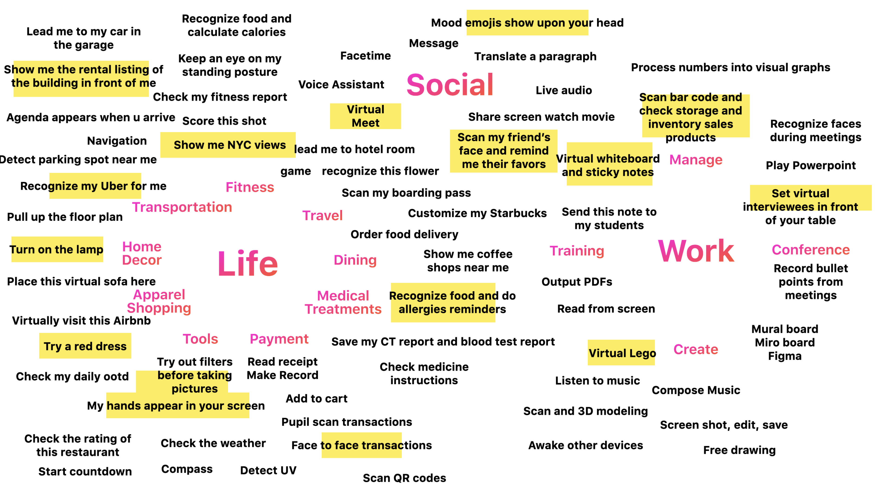
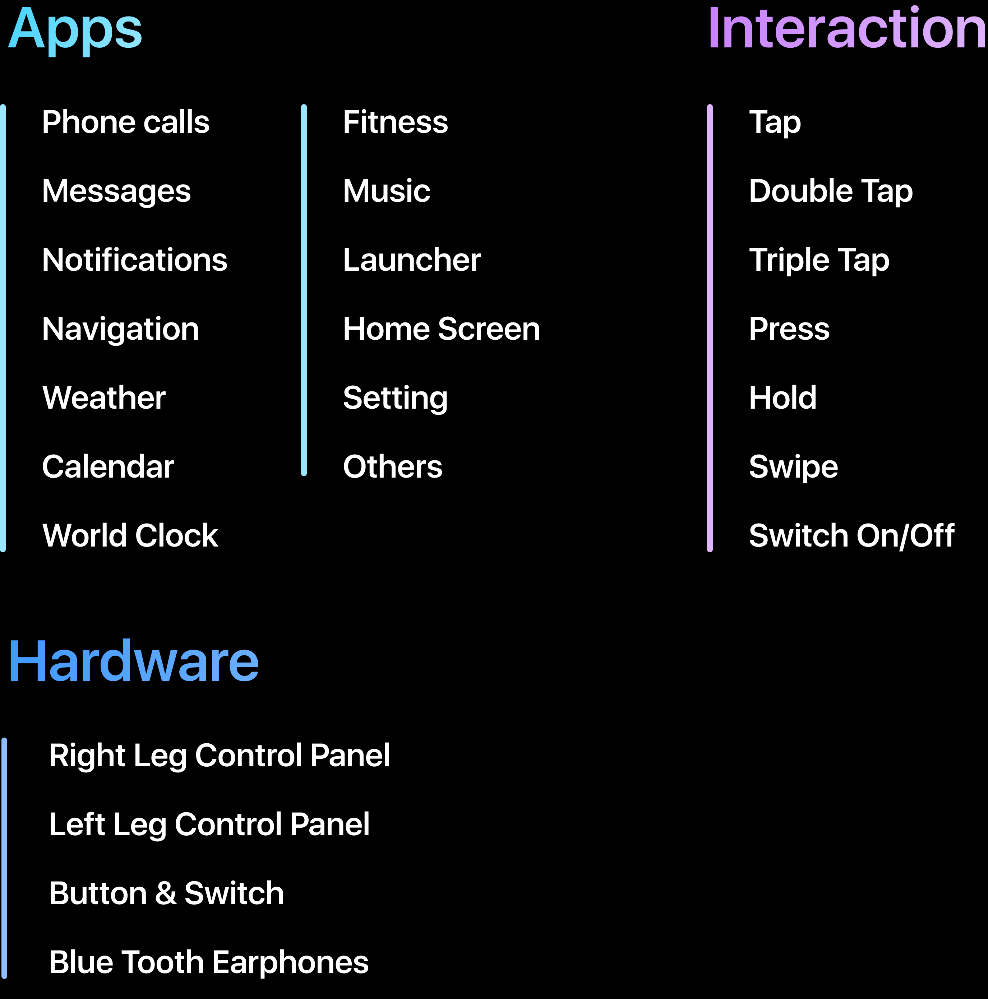
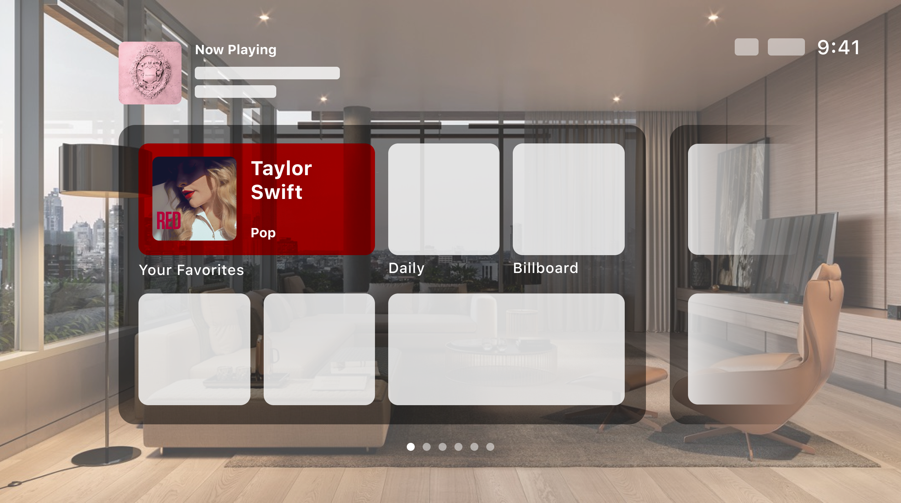
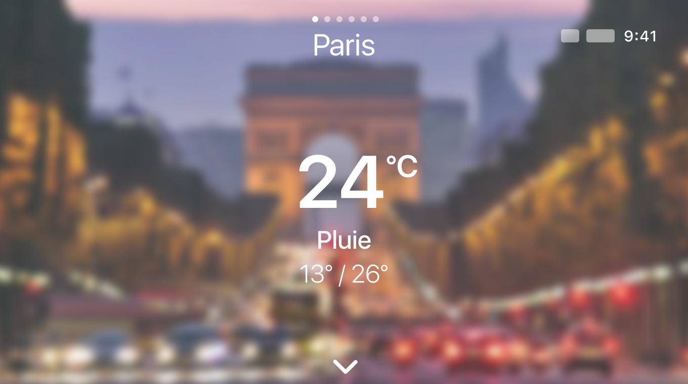

Intern Project | 2021
Smart Glasses
UX Structure Design
User friendly UX navigation system
designed for groundbreaking products.

About This Project
I’m responsible for designing the OS system for these smart wearable glasses, from basic product infrastructure to detailed app user flows. Though this is a juvenile product, 80% of UX designs in the final product is done by me independently.
How did I approach
this project?
01 | Competitor Research
02 | Team Brainstorming
03 | Multi-Team Collaboration
04 | Hardware Testouts
05 | Wireframes & Prototypes
06 | Detailed User Flow Map
Research & Brainstorming
Before designing the infrastructure, we brainstormed many possible usage scenarios of smart glasses. Since we were starting the project from scratch, this step helped the team to have a better understanding toward product functions.
Brainstorming
How will smart glasses enhance our daily life routine?
Answers on the right were concluded from sticky notes by team members. From these answers we conclude functions users might be interested in.

Product Define
What functions will there be?
Based on the version1.0 hardware prototype, we discussed the possible Apps and user interaction gestures which the product might support.

Team Collaboration & Hardware Testouts
In this project I got to collaborate with multiple sides during the whole process of design. Teams that I contacted include the product designers, supply chain managers, software & algorithm engineerers, and UI designers. I also visited the R&D lab and manufacturing site, learning the whole process from design to manufacture.
UX Structure Design
Infrastructures I designed which actually appears in the final product: Gesture Navigation, Home Screen, Layer Structure, Notification Rules, Music & Audio Rules.
Wireframes & Prototypes
I drew out wireframes and detailed user navigation flow maps for some apps, Which most has been accepted in the final product. Apps I tried include Weather, Calendar, Music, General, Message, etc.
What makes AR glasses different?
AR Glasses are visually broader than a laptop.
The glasses have less limitation when it comes to visible sight. Great sufficiency in both reading and watching contents.

What makes AR glasses different?
AR Glasses are transparent like a TV.
The coolest thing is that you can look through the screen. Which makes the weather app and navigation app a lot more fun.
